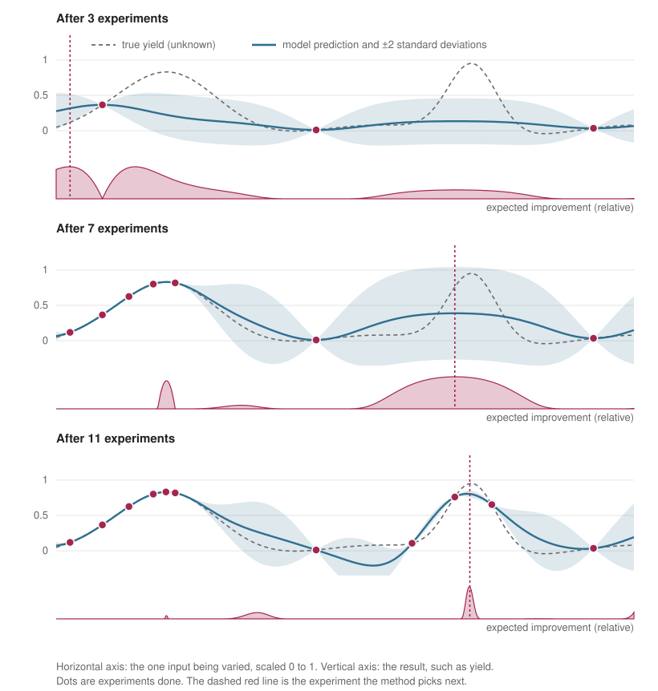
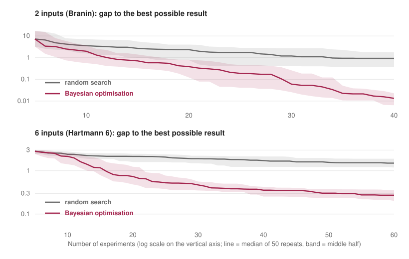

How do you find the best material when every experiment takes a week?
A chemist who wants a better catalyst, a better polymer or a better drug formulation faces a search space far too large to try in full. A reaction has a catalyst, a solvent, a temperature, a concentration and a time, and each can be varied in many steps. If one experiment takes a week, or costs thousands, the real question is which experiment to do next. This post builds the standard answer, Bayesian optimisation, from two parts, a model and a rule, and then tests it against the obvious baseline of trying things at random.
1. When each experiment is expensive
Machine learning usually assumes plenty of data. Here the data are the thing we are paying for. Suppose we can afford 40 experiments and want the best result we can find. We could try a grid or a random sample, which ignores everything learned along the way. Or we could use each result to decide the next experiment, as a good chemist does. Bayesian optimisation is a way to make that second approach systematic and reproducible. It has been used for tuning machine learning models, designing materials and planning chemical reactions, and the ideas are the same in each case.
2. A model that knows what it does not know
The first part is a surrogate, a cheap model of the expensive experiment. It must give not only a prediction at every untried setting but also how unsure that prediction is. The usual choice is a Gaussian process. Its one assumption is that settings close to each other give similar results, which the kernel expresses as a number between 0 and 1 for every pair of points. After seeing some experiments, the model predicts a mean at any new setting and a standard deviation around it. The standard deviation is small next to a setting already tried and large far from all of them.
The lower part of Figure 1 gives the idea. With only three experiments the model is a smooth curve with a wide band of uncertainty, because it has seen almost nothing. As experiments are added the band closes around them. The band is the honest part: it says where the model is guessing. My post on drug discovery makes the same point about prediction in general, that a number without an uncertainty is hard to act on.
3. Choosing the next experiment
The second part is the rule that turns the model into a decision, called an acquisition function. A setting is attractive for two reasons. Its predicted result may be high, which is exploitation. Or the model may be so unsure about it that it could hide something much better, which is exploration. Expected improvement combines the two. If the best result so far is b, and the model predicts a mean μ with standard deviation σ at a new setting, the expected improvement is (μ − b)Φ(z) + σφ(z), where z = (μ − b)/σ and Φ and φ are the normal distribution function and density. The first term rewards a high mean and the second rewards high uncertainty. Each experiment goes to the setting with the highest expected improvement, then the model is refitted with the new result.
Figure 1 shows this on a made-up one-input problem, for instance the fraction of one component in a mixture. The true yield, unknown to the method, has a small peak near 0.2 and a taller one near 0.72. After three experiments the method tries the left edge, where the model is most unsure. By seven experiments it has climbed the small peak and its yield has stopped improving at 0.82, but the model is still unsure about the middle region, and expected improvement now points there. By eleven experiments it has probed the region, and the twelfth experiment, at 0.716, finds a yield of 0.950 against a true maximum of 0.952. The method was not told where to look. It spent its first experiments on the nearby peak and then moved on because the model said the rest was still open.

4. Does it beat random search?
One example can be luck, so I tested it properly. I used two standard test problems with known best answers, Branin with 2 inputs and Hartmann with 6 inputs. Each method got a fixed budget of experiments, 40 for Branin and 60 for Hartmann, and both started from the same five random points. I repeated everything with 50 different starting seeds and recorded how far the best result found was from the best possible one. Figure 2 shows the median and the middle half of the 50 runs, and Table 1 gives numbers.

| Problem | Experiments | Random search, median gap | Bayesian, median gap | Seeds where Bayesian was better |
|---|---|---|---|---|
| Branin, 2 inputs | 20 | 2.34 | 0.385 | 42 of 50 |
| Branin, 2 inputs | 40 | 0.90 | 0.013 | 50 of 50 |
| Hartmann, 6 inputs | 20 | 2.15 | 0.735 | 47 of 50 |
| Hartmann, 6 inputs | 60 | 1.50 | 0.273 | 50 of 50 |
On Branin, Bayesian optimisation after 20 experiments is closer to the optimum than random search after 40. To find out how long random search needs to match it, I ran random search for longer, and its median gap first reaches Bayesian optimisation’s 20-experiment figure of 0.385 at 101 experiments, about five times as many. On Hartmann the gap is wider still. At 60 experiments Bayesian optimisation has a median gap of 0.273, about 8% of the best possible value of 3.32. Random search given 4,000 experiments still had a median gap of 0.354. The cheap approach to expensive experiments is therefore to spend computing on the choice, which costs almost nothing next to a week of lab time.
Two cautions apply. Early on the advantage is small, and at 10 experiments Bayesian optimisation beat random search on only 30 of 50 seeds on Branin, because a model built on a handful of points has little to go on. And Bayesian optimisation has not solved Hartmann, since 60 experiments still leave a visible gap.
5. Where it breaks
These test problems are smooth and noise-free, which suits a Gaussian process, so real laboratories are a harder setting in several ways. Measurements are noisy, which means the model needs a noise term and the idea of a best result so far becomes unclear. Experiments are run in batches, such as a plate of 96 reactions at once, so the method must pick many points before seeing any result. Inputs are often categories, such as which solvent or which ligand, and molecules are not points on a line at all. Finally, the method struggles as the number of inputs grows, since a distance-based model has less and less to go on. It is usually reported to degrade beyond a few tens of inputs. The Hartmann result above, with only 6 inputs, already shows the trend.
The model can also simply be wrong. If the true response changes sharply, or has a cliff where a reaction stops working, a smooth model will be confidently mistaken. The kernel length scale in my code is chosen from five values by how well each explains the data, which helps but does not remove the problem. Careful practitioners check the model against held-out experiments and keep some experiments chosen at random as a safeguard.
6. Experiments in the real world
Several groups have used these ideas on real chemistry. A 2021 Nature paper by Shields and colleagues applied Bayesian optimisation to reaction conditions and reported greater efficiency than human participants, and less bias, on a test reaction. In 2020, Burger and colleagues combined a mobile robot with a search algorithm, and over eight days it ran 688 experiments in a ten-variable space and found photocatalyst mixtures six times more active than the starting formulations. Griffiths and Hernández-Lobato showed how to search for molecules by running the method in the latent space of a variational autoencoder, which is one answer to the problem of molecules not being points on a line.
The common idea is a loop in which a model proposes, an experiment answers, and the model updates. A human is still in the loop to decide what is worth optimising, and to notice when the measured quantity is a poor stand-in for what actually matters, such as a high yield from a catalyst that cannot be made at scale.
7. The code
The first block is the surrogate. rbf measures similarity between points, gp_fit fits the model and also returns the marginal likelihood, a score for how well a given length scale explains the data, and gp_predict returns a mean and standard deviation at new points.
def rbf(A, B, ls):
"""Similarity of every pair of points: near 1 when close, near 0 when far."""
d2 = ((A[:, None, :] - B[None, :, :]) ** 2).sum(-1)
return np.exp(-0.5 * d2 / ls ** 2)
def gp_fit(X, y, ls, noise=1e-6):
L = np.linalg.cholesky(rbf(X, X, ls) + noise * np.eye(len(X)))
alpha = np.linalg.solve(L.T, np.linalg.solve(L, y))
log_ml = -0.5 * y @ alpha - np.log(np.diag(L)).sum() - 0.5 * len(y) * math.log(2 * math.pi)
return L, alpha, log_ml
def gp_predict(Xs, X, L, alpha, ls):
"""Predicted value and uncertainty at new points (y has mean 0 and variance 1)."""
Ks = rbf(Xs, X, ls)
v = np.linalg.solve(L, Ks.T)
var = 1.0 - (v ** 2).sum(0)
return Ks @ alpha, np.sqrt(np.maximum(var, 1e-12))
The second block is the decision rule. It standardises the results, picks the length scale with the best marginal likelihood from five values, predicts at 2,000 random candidate settings and returns the one with the highest expected improvement.
def expected_improvement(mu, sd, best):
"""How much better than the best result so far we expect a new experiment to be."""
z = (mu - best) / sd
return (mu - best) * norm.cdf(z) + sd * norm.pdf(z)
def next_experiment(X, y, rng, n_candidates=2000, grid=(0.1, 0.2, 0.3, 0.5, 0.8)):
m, s = y.mean(), y.std() + 1e-9
z = (y - m) / s
fits = [(gp_fit(X, z, ls), ls) for ls in grid]
(L, alpha, _), ls = max(fits, key=lambda f: f[0][2]) # lengthscale with the best marginal likelihood
cand = rng.random((n_candidates, X.shape[1]))
mu, sd = gp_predict(cand, X, L, alpha, ls)
return cand[np.argmax(expected_improvement(mu, sd, z.max()))]
The third block is the whole loop. Setting method to random search replaces the choice with a random point, which makes the comparison fair, since both start from the same five points.
def optimise(f, dim, budget, n_init, seed, method):
"""Best value found after each experiment. Both methods start from the same random points."""
X = np.random.default_rng(seed).random((n_init, dim))
y = np.array([f(x) for x in X])
rng = np.random.default_rng(seed + 1000)
while len(y) < budget:
x = rng.random(dim) if method == "random" else next_experiment(X, y, rng)
X, y = np.vstack([X, x]), np.append(y, f(x))
return np.maximum.accumulate(y)
The one-input example in Figure 1 uses the same functions with a fixed length scale of 0.08 and expected improvement evaluated on a fine grid of 501 points instead of random candidates.
What to take away
When experiments are expensive, the choice of the next one is the main decision. A Gaussian process turns past results into a prediction with an honest uncertainty, and expected improvement turns that into a choice that balances exploiting what looks good with exploring what is unknown. In these tests that matched what random search reached in about a fifth of the experiments on a small problem and kept a clear lead on a larger one. The method is least reliable when measurements are noisy, inputs are many or the response is not smooth, which describes much of real chemistry, so it supports a scientist’s judgement and does not replace it.
Further reading
Jones, D. R., Schonlau, M. and Welch, W. J. (1998). Efficient global optimization of expensive black-box functions. Journal of Global Optimization, 13(4), 455–492.
Rasmussen, C. E. and Williams, C. K. I. (2006). Gaussian Processes for Machine Learning. MIT Press.
Snoek, J., Larochelle, H. and Adams, R. P. (2012). Practical Bayesian optimization of machine learning algorithms. Advances in Neural Information Processing Systems, 25, 2951–2959.
Shahriari, B., Swersky, K., Wang, Z., Adams, R. P. and de Freitas, N. (2016). Taking the human out of the loop: a review of Bayesian optimization. Proceedings of the IEEE, 104(1), 148–175.
Frazier, P. I. (2018). A tutorial on Bayesian optimization. arXiv:1807.02811.
Garnett, R. (2023). Bayesian Optimization. Cambridge University Press.
Burger, B. et al. (2020). A mobile robotic chemist. Nature, 583, 237–241.
Shields, B. J. et al. (2021). Bayesian reaction optimization as a tool for chemical synthesis. Nature, 590, 89–96.
Griffiths, R.-R. and Hernández-Lobato, J. M. (2020). Constrained Bayesian optimization for automatic chemical design using variational autoencoders. Chemical Science, 11, 577–586.
Lookman, T., Balachandran, P. V., Xue, D. and Yuan, R. (2019). Active learning in materials science with emphasis on adaptive sampling using uncertainties for targeted design. npj Computational Materials, 5, 21.
Dixon, L. C. W. and Szegő, G. P. (1978). The global optimisation problem: an introduction. In Towards Global Optimisation 2, North-Holland, 1–15.
Appendix: credits
Figures 1 and 2 and every number in Table 1 and the text are computed by the code on this page, and I checked that both test functions reproduce their known best values. The one-input yield curve is invented for illustration. Branin and Hartmann are standard benchmark functions, not chemistry, and are noise-free, so real gains will differ. The descriptions of the Shields and Burger papers follow their published abstracts.